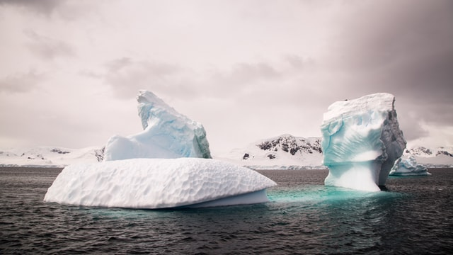

"Europe as a whole has now a big chance to come out stronger from the crisis.
Today we have taken a historic step that we can all be proud of," said von der Leyen. "Tonight is a big step toward recovery."
Merkel described the agreement as an "important signal," and said she was "very relieved" that EU leaders were able to cooperate. It was good "that we pulled ourselves together in the end," she said.

That sentiment was echoed by French President Emmanuel Macron, who called it a "historic day for Europe." "There is no such thing as a perfect world, but we have made progress," said Macron.